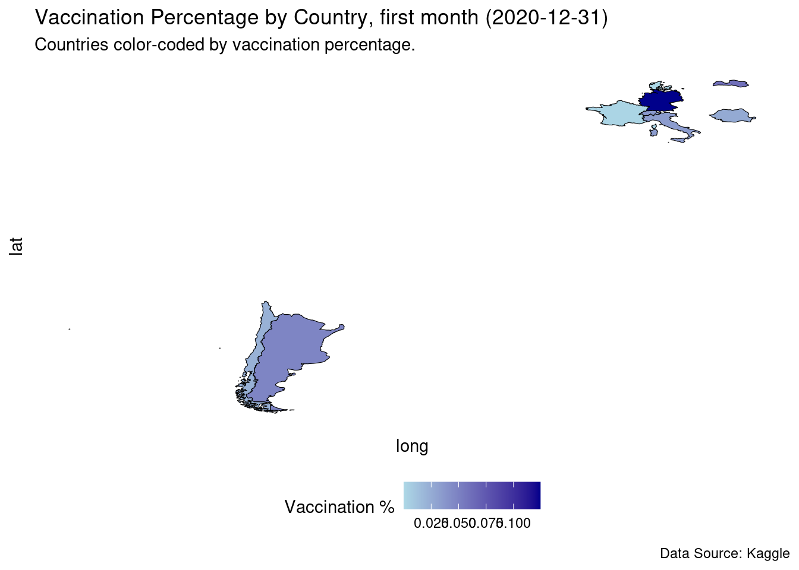
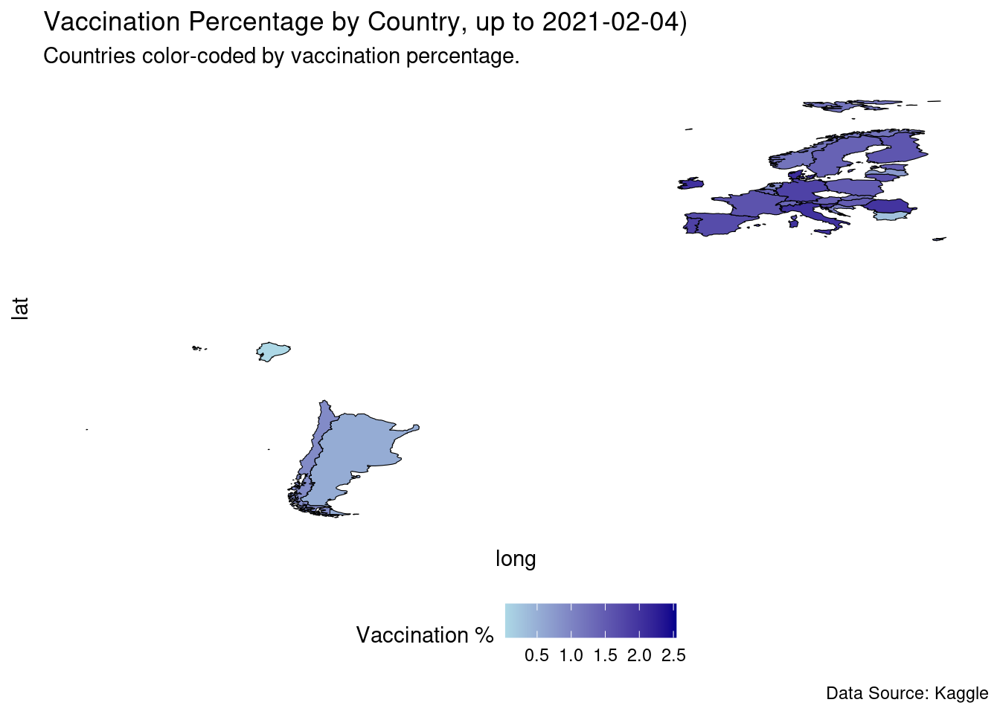
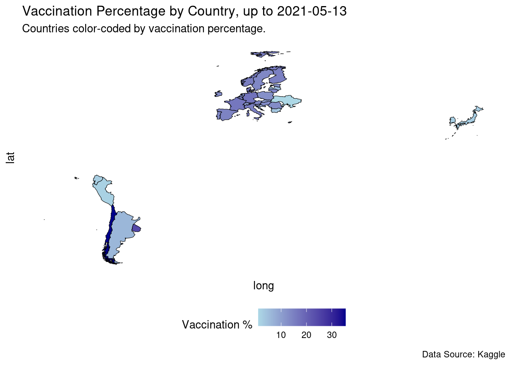
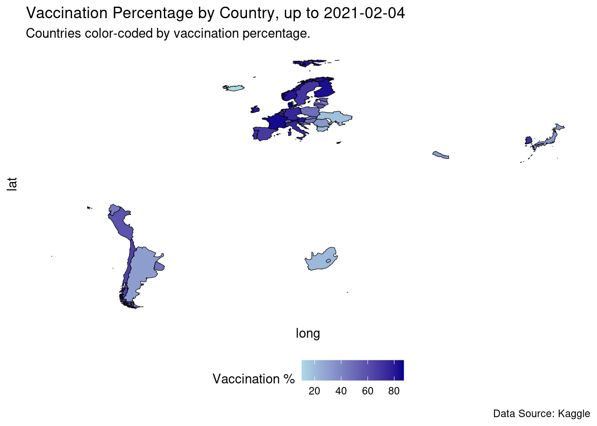
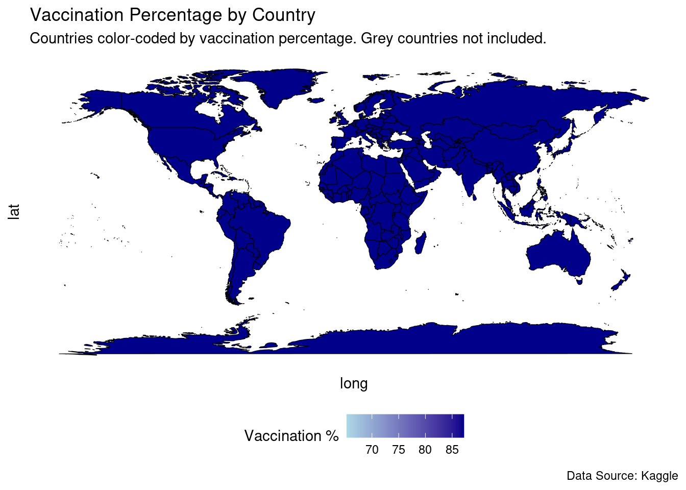

First of we’d like to make a heat map over the world when taking vaccine amount in to account.
We load necessary libraries:
library(tidyverse)
── Attaching core tidyverse packages ──────────────────────── tidyverse 2.0.0 ──
✔ dplyr 1.1.2 ✔ readr 2.1.4
✔ forcats 1.0.0 ✔ stringr 1.5.0
✔ ggplot2 3.5.1 ✔ tibble 3.2.1
✔ lubridate 1.9.2 ✔ tidyr 1.3.0
✔ purrr 1.0.2
── Conflicts ────────────────────────────────────────── tidyverse_conflicts() ──
✖ dplyr::filter() masks stats::filter()
✖ dplyr::lag() masks stats::lag()
ℹ Use the conflicted package (<http://conflicted.r-lib.org/>) to force all conflicts to become errors
library(scales)
Attaching package: 'scales'
The following object is masked from 'package:purrr':
discard
The following object is masked from 'package:readr':
col_factor
Rows: 35623 Columns: 8
── Column specification ────────────────────────────────────────────────────────
Delimiter: "\t"
chr (2): Country, vaccine
dbl (5): Year, Population, total_vaccinations, Vaccinated people pr country...
date (1): date
ℹ Use `spec()` to retrieve the full column specification for this data.
ℹ Specify the column types or set `show_col_types = FALSE` to quiet this message.
# Filtering data by country for easier overview manufac_world_pop <- manufac_world_pop |>arrange(by_group=Country)
Plotting the actual plot
importing another data set so we can make a heat map. We will combine the data here but not make a new data file because of it being to big to load.
# Loading the maps packagelibrary(maps)
Attaching package: 'maps'
The following object is masked from 'package:purrr':
map
world_map <-map_data("world") # This gives us long and lat of each country# Now we merge the world map and the data we just did: world_map_vaccinated <- world_map |>left_join(manufac_world_pop, by =c("region"="Country"), relationship ="many-to-many")
Plotting heat map for different dates through the data set:
# Plotting with ggplot## First month of the vaccinesp1 <- world_map_vaccinated |>filter(date <=as.Date("2020-12-31")) |># Filter up to a certain dategroup_by(region) |># Grouping by country summarise(long, # Keeping the following variables and making sure that only the lat, # highest percentage is recorded for each country group,`Percentage Vaccinated`=max(`Percentage Vaccinated`, na.rm =TRUE)) |>ungroup() |># Ungroupingggplot(aes(x = long, y = lat, group = group, fill =`Percentage Vaccinated`)) +geom_polygon(color ="black", size =0.2) +# Making the actual plotscale_fill_gradient(low ="lightblue",high ="darkblue",na.value ="grey50",name ="Vaccination %") +theme_minimal() +labs(title ="Vaccination Percentage by Country, first month (2020-12-31)",subtitle ="Countries color-coded by vaccination percentage.",caption ="Data Source: Kaggle") +theme(axis.text =element_blank(), # Making sure that axis are correctly formatedaxis.ticks =element_blank(),panel.grid =element_blank(),legend.position ="bottom" )
Warning: Returning more (or less) than 1 row per `summarise()` group was deprecated in
dplyr 1.1.0.
ℹ Please use `reframe()` instead.
ℹ When switching from `summarise()` to `reframe()`, remember that `reframe()`
always returns an ungrouped data frame and adjust accordingly.
`summarise()` has grouped output by 'region'. You can override using the
`.groups` argument.
Warning: Using `size` aesthetic for lines was deprecated in ggplot2 3.4.0.
ℹ Please use `linewidth` instead.
# Displaying the plotp1

We repeat the process for different dates in the data set:
# Plotting with ggplot## Febuary 2021p2 <- world_map_vaccinated |>filter(date <=as.Date("2021-02-04")) |>group_by(region) |>summarise(long, lat, group,`Percentage Vaccinated`=max(`Percentage Vaccinated`, na.rm =TRUE)) |>ungroup() |>ggplot(aes(x = long, y = lat, group = group, fill =`Percentage Vaccinated`)) +geom_polygon(color ="black", size =0.2) +scale_fill_gradient(low ="lightblue",high ="darkblue",na.value ="grey50",name ="Vaccination %") +theme_minimal() +labs(title ="Vaccination Percentage by Country, up to 2021-02-04)",subtitle ="Countries color-coded by vaccination percentage.",caption ="Data Source: Kaggle") +theme(axis.text =element_blank(),axis.ticks =element_blank(),panel.grid =element_blank(),legend.position ="bottom" )
Warning: Returning more (or less) than 1 row per `summarise()` group was deprecated in
dplyr 1.1.0.
ℹ Please use `reframe()` instead.
ℹ When switching from `summarise()` to `reframe()`, remember that `reframe()`
always returns an ungrouped data frame and adjust accordingly.
`summarise()` has grouped output by 'region'. You can override using the
`.groups` argument.
# Displaying the plotp2

# Plotting with ggplot## May 2021p3 <- world_map_vaccinated |>filter(date <=as.Date("2021-05-13")) |>group_by(region) |>summarise(long, lat, group,`Percentage Vaccinated`=max(`Percentage Vaccinated`, na.rm =TRUE)) |>ungroup() |>ggplot(aes(x = long, y = lat, group = group, fill =`Percentage Vaccinated`)) +geom_polygon(color ="black", size =0.2) +scale_fill_gradient(low ="lightblue",high ="darkblue",na.value ="grey50",name ="Vaccination %") +theme_minimal() +labs(title ="Vaccination Percentage by Country, up to 2021-05-13",subtitle ="Countries color-coded by vaccination percentage.",caption ="Data Source: Kaggle") +theme(axis.text =element_blank(),axis.ticks =element_blank(),panel.grid =element_blank(),legend.position ="bottom" )
Warning: Returning more (or less) than 1 row per `summarise()` group was deprecated in
dplyr 1.1.0.
ℹ Please use `reframe()` instead.
ℹ When switching from `summarise()` to `reframe()`, remember that `reframe()`
always returns an ungrouped data frame and adjust accordingly.
`summarise()` has grouped output by 'region'. You can override using the
`.groups` argument.
# Displaying the plotp3

# Plotting with ggplot## March 2022p4 <- world_map_vaccinated |>filter(date <=as.Date("2022-03-25")) |>group_by(region) |>summarise(long, lat, group,`Percentage Vaccinated`=max(`Percentage Vaccinated`, na.rm =TRUE)) |>ungroup() |>ggplot(aes(x = long, y = lat, group = group, fill =`Percentage Vaccinated`)) +geom_polygon(color ="black", size =0.2) +scale_fill_gradient(low ="lightblue",high ="darkblue",na.value ="grey50",name ="Vaccination %") +theme_minimal() +labs(title ="Vaccination Percentage by Country, up to 2021-02-04",subtitle ="Countries color-coded by vaccination percentage.",caption ="Data Source: Kaggle") +theme(axis.text =element_blank(),axis.ticks =element_blank(),panel.grid =element_blank(),legend.position ="bottom" )
Warning: Returning more (or less) than 1 row per `summarise()` group was deprecated in
dplyr 1.1.0.
ℹ Please use `reframe()` instead.
ℹ When switching from `summarise()` to `reframe()`, remember that `reframe()`
always returns an ungrouped data frame and adjust accordingly.
`summarise()` has grouped output by 'region'. You can override using the
`.groups` argument.
# Displaying the plotp4

# Plotting the whole world## All the dates within the data setp5 <- world_map_vaccinated |>group_by(region) |>summarise(long, lat, group,`Percentage Vaccinated`=max(`Percentage Vaccinated`, na.rm =TRUE)) |>ungroup() |>ggplot(aes(x = long, y = lat, group = group, fill =`Percentage Vaccinated`)) +geom_polygon(color ="black", size =0.2) +scale_fill_gradient(low ="lightblue",high ="darkblue",na.value ="grey50",name ="Vaccination %") +theme_minimal() +labs(title ="Vaccination Percentage by Country",subtitle ="Countries color-coded by vaccination percentage. Grey countries not included.",caption ="Data Source: Kaggle") +theme(axis.text =element_blank(),axis.ticks =element_blank(),panel.grid =element_blank(),legend.position ="bottom" )
Warning: There were 213 warnings in `summarise()`.
The first warning was:
ℹ In argument: `Percentage Vaccinated = max(`Percentage Vaccinated`, na.rm =
TRUE)`.
ℹ In group 1: `region = "Afghanistan"`.
Caused by warning in `max()`:
! no non-missing arguments to max; returning -Inf
ℹ Run `dplyr::last_dplyr_warnings()` to see the 212 remaining warnings.
Warning: Returning more (or less) than 1 row per `summarise()` group was deprecated in
dplyr 1.1.0.
ℹ Please use `reframe()` instead.
ℹ When switching from `summarise()` to `reframe()`, remember that `reframe()`
always returns an ungrouped data frame and adjust accordingly.
`summarise()` has grouped output by 'region'. You can override using the
`.groups` argument.
Warning: There were 213 warnings in `summarise()`.
The first warning was:
ℹ In argument: `Percentage Vaccinated = max(`Percentage Vaccinated`, na.rm =
TRUE)`.
ℹ In group 1: `region = "Afghanistan"`.
Caused by warning in `max()`:
! no non-missing arguments to max; returning -Inf
ℹ Run `dplyr::last_dplyr_warnings()` to see the 212 remaining warnings.
# A tibble: 252 × 2
region `Percentage Vaccinated`
<chr> <dbl>
1 Afghanistan -Inf
2 Albania -Inf
3 Algeria -Inf
4 American Samoa -Inf
5 Andorra -Inf
6 Angola -Inf
7 Anguilla -Inf
8 Antarctica -Inf
9 Antigua -Inf
10 Argentina 31.1
# ℹ 242 more rows
p6 <- world_map_vaccinated |>group_by(region ==c("Argentina", "Chile", "Ecuador", "Peru", "Uruguay")) |>summarise(long, lat, group,`Percentage Vaccinated`=max(`Percentage Vaccinated`, na.rm =TRUE)) |>ungroup() |>ggplot(aes(x = long, y = lat, group = group, fill =`Percentage Vaccinated`)) +geom_polygon(color ="black", size =0.2) +scale_fill_gradient(low ="lightblue",high ="darkblue",na.value ="grey50",name ="Vaccination %") +theme_minimal() +labs(title ="Vaccination Percentage by Country",subtitle ="Countries color-coded by vaccination percentage. Grey countries not included.",caption ="Data Source: Kaggle") +theme(axis.text =element_blank(),axis.ticks =element_blank(),panel.grid =element_blank(),legend.position ="bottom" )
Warning: There was 1 warning in `group_by()`.
ℹ In argument: `region == c("Argentina", "Chile", "Ecuador", "Peru",
"Uruguay")`.
Caused by warning in `region == c("Argentina", "Chile", "Ecuador", "Peru", "Uruguay")`:
! longer object length is not a multiple of shorter object length
Warning: Returning more (or less) than 1 row per `summarise()` group was deprecated in
dplyr 1.1.0.
ℹ Please use `reframe()` instead.
ℹ When switching from `summarise()` to `reframe()`, remember that `reframe()`
always returns an ungrouped data frame and adjust accordingly.
`summarise()` has grouped output by 'region == c("Argentina", "Chile",
"Ecuador", "Peru", "Uruguay")'. You can override using the `.groups` argument.
# Displaying the plotp6

Saving the plots:
# Saving plots# Using ggsave to save the picture as a png to the correct path.## p1 - 2020/12/31ggsave(filename ="../results/world_plot_2020-12-31.png", plot = p1, width =10, height =6, dpi =300)## p2 - 2021/02/04ggsave(filename ="../results/world_plot_2021-02-04.png", plot = p2, width =10, height =6, dpi =300)## p3 - 2021/05/13ggsave(filename ="../results/world_plot_2021-05-13.png", plot = p3, width =10, height =6, dpi =300)## p4 - 2022/03/25ggsave(filename ="../results/world_plot_2022-03-25.png", plot = p4, width =10, height =6, dpi =300)## p5 - world 2022/03/25ggsave(filename ="../results/whole_world_plot_2022-03-25.png", plot = p5, width =10, height =6, dpi =300)